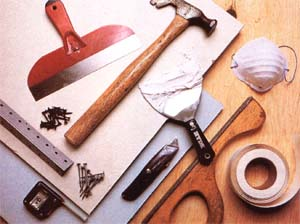
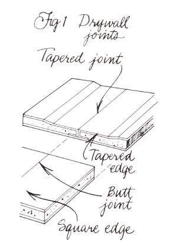
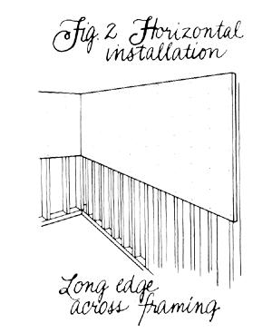
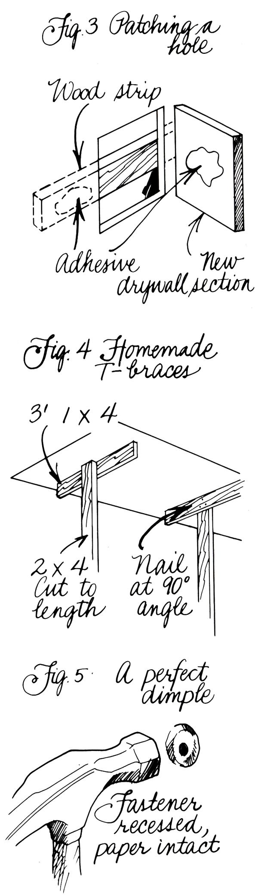
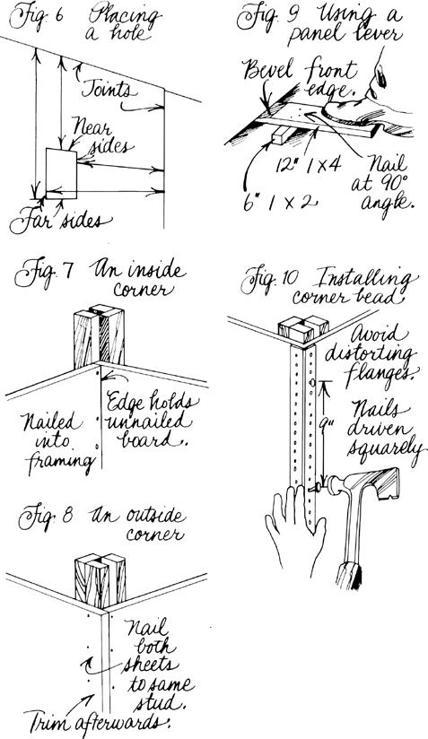
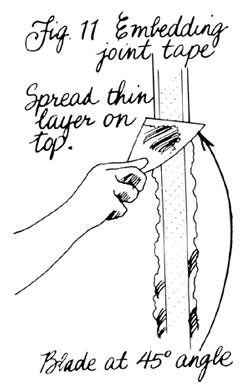
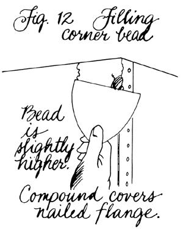
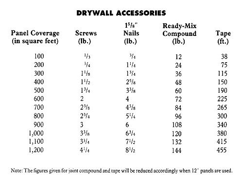
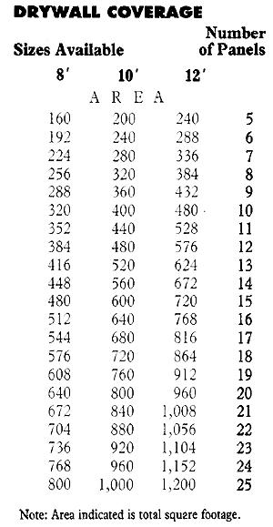
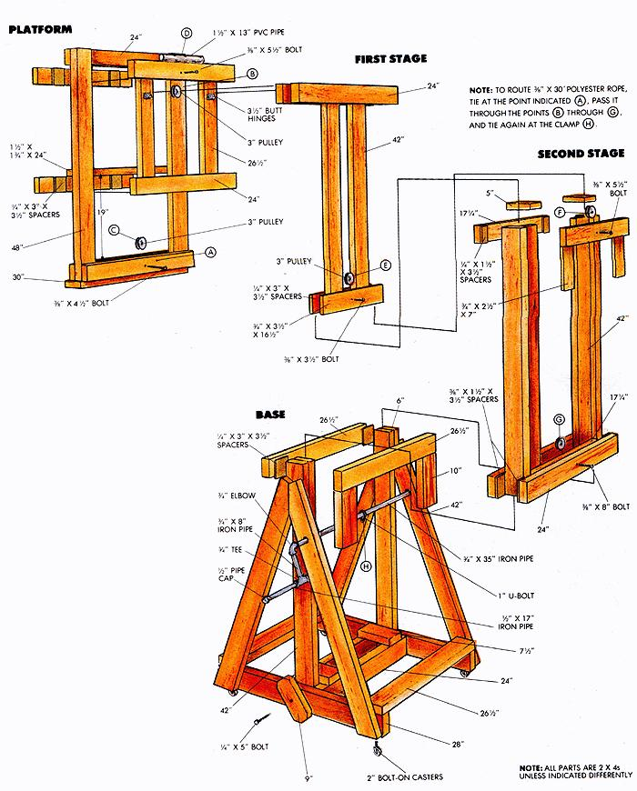

Drywall
A guide to basic drywalling, including diagrams, building a homemade drywall jack, tools and supplies, sizing, edging.
By Richard Freudenberger
January/February 1990
MOTHER'S HANDOOK
For the Wet-Behind-the-Ears
Hanging sheets of gypsum is a rough job-but someone's got to do it.
YOU MAY KNOW IT BY ANY OF ITSmany names-drywall, gypsum, gypboard, plasterboard, or the familiar brand name, Sheetrock. Whatever the label, it can be heavy, cumbersome, and tedious to work with. Yet over 400 billion square feet of the mineral-based material have been wrestled into place in homes and buildings in our collective lifetime.
Gypsum-the earthbound sulfate of calcium to which plaster of paris owes its existencehas been around forever. But it's been only since the turn of the century that an enterprising soul named Sackett developed a method of layering it between sheets of felt paper to produce a "plaster board" that made the hand-troweled wall a thing of the past.
Plasterboard has come a long way since that time, but one thing hasn't changed: It still looks best when installed or repaired according to Hoyle. And even though you may not know a putty knife from a plaster pan, you can learn how drywalling is supposed to be done, make a small investment in tools, and then have an honest go at it. Actually, gypboard is well suited to those who expect to make mistakes, simply because it's relatively inexpensive.
Even if you didn't know it at the time, you've probably seen an unfinished drywall sheet somewhere. Its face (the side that goes toward the interior of the room) is finished in a cream- or natural-colored paper. The back is usually gray, and the edges are trimmed with folded tape to protect them.
Typically, you'll see '/z"-thick paperfaced panels measuring 4' X 8' or 4' X 12', though they're available in lengths up to 16 ' . In better-quality construction, 5/a" board is
used; conversely, 3/a" panels are suitable for economy or two-layer work and when bending radii, while '/4" drywall is reserved for surfacing existing plaster walls.
But the choices don't stop there. Aside from the standard drywall, there's also a 5/a"thick fire-rated sheet (used on walls common to the garage and house and in commercial work), a water-resistant board with specially treated facings and core (for bathrooms, and as a backing for tile and plastic wallboard), and a foil-backed gypboard that incorporates a vapor retarder.
If you sight down the long edge of a drywall panel, you'll notice that the face is tapered toward the edge (Fig. 1). That's to allow a slight recess to accommodate the tape and reinforcing compound, which makes a smooth, strong joint. You cold still use the older style of square-edged panel, however, if you're planning to cover the surface with wallpaper, since the joints won't show.
There's also a special round-edged tapered board that's used on walls and ceilings that might be exposed to high humidity and temperature swings during construction. Conditions like these often cause ridges and beading in the joints; the design allows for an initial filling of setting plaster, which bonds permanently, without shrinking, in an hour or two. Afterwards, a regular joint compound would be used to finish the job.
Finally, for customers who want walls with a paneled look, most drywall manufacturers make bevel-edged sheets that create a clean, visible groove at each panel joint.
Tools and Supplies
Drywall work doesn't require a huge investment in equipment. You may already own many of the necessary tools, and the rest are by no means expensive.
It's essential, of course, that you have a sharp utility knife, preferably one in which the blade retracts into the handle. Several joint knives, or trowels, are needed as well: a flexible 4" or 6" blade, a larger 10" taping knife, and perhaps a corner trowel for clean inside angles. Professionals also use a 12" curved-blade trowel for finishing work; it probably wouldn't be worth buying, but if you can borrow one and get the hang of feathering an edge with its stiff metal blade, you'll be able to achieve pretty good results.
A 4' aluminum T-square guarantees straight, accurate cuts. A rasp or a Stanley Surform tool will shave down an edge quickly, and a keyhole or compass saw is best for cutting outlet holes. You'll also want a tape measure and an 8' stepladder.
Filling and taping require a 12" mud pan to hold joint compound, a supply of 120-grit sandpaper, a sanding block, a dust mask, and rolls of wallboard joint tape. Paper tape is fine for walls and inside corners; for ceiling joints you may want to use self-adhesive fiberglass tape to save the trouble of the initial "bedding," which we'll get to later.
Drywall is especially vulnerable to tears and gouges, so outside corners are always protected with corner bead, a metal reinforcement strip that's nailed in place and covered with compound. Likewise, at places where panels meet window- or doorjambs and other dissimilar materials, metal trim can be used to provide a neat finished edge. You'll probably need to use a pair of tin snips to cut through these pieces.
Fastening the panels to the room's framing studs can be accomplished either with drywall nails or bugle-head screws. Nails are OK for the walls: All you'll need is a supply of 15/a" ring-shanked nails and a drywall hammer. If you try to do the job with a claw hammer, you may be disappointed. The drywall tool has an angled head to allow nailing close to ceilings and corners. Its checkpatterned face prevents slippage, and it indents the panel so the nail holes can be filled properly. Furthermore, its hatchet end can trim framing, shape edges, and lever panels into tight spots if you know how to use it.
Screw fasteners are the best choice, especially for overhead work. For wood framing, 1'/a" Type W screws work best. They're placed using an electric driver equipped with a magnetized Phillips head and a depth stop. (This specialized tool can be rented, so don't worry about buying one.)
Joint compound, or filler, is critical to the success of your project. Professional wallers have a dozen choices, based on use, formulation, and drying time. Everyone else should probably stick with ready-mixed vinylbased compounds. Two kinds are usually sold: general-purpose mix for bedding, finishing, and surface texturing; and lightweight compound, an improved blend that is easier to work and sand. Both should be protected from freezing before they've dried.
Sizing Up and Reckoning
Preparation is the key to a top-notch job. If you're aiming for a presentable appearance with the least amount of effort, it's possible to skip much of the groundwork-but your lack of attention will most likely show in little ways.
Ideally, you'll be starting in a space devoid of drywall-all that's visible should be wall framing and ceiling joists. Naturally, that may not always be possible. The room you're looking at could very well be covered with cracked, buckled, or mildew-soaked gypsum. If so, that mess will have to come off before you can do any serious work-it's a dirty process, but it can be sort of fun.
To do the job right, you'll need a flat pry bar, a crowbar, and a framing hammer. Remove any rugs. If you can't take up the carpet, at least cover it (and any other flooring worth saving) with a heavy drop cloth. Turn off the power to the room's circuits, unscrew the outlet and switch covers, and use the pry bar and a thin block of wood to remove good baseboard, molding, and casing trim (if you're careful, it won't split and you can reinstall it later).
The rest is simple demolition. Once you've made a foot-square starting hole in a cavity between framing studs, you can rip away great hunks of wallboard, then remove with the pry bar the ragged strips still nailed to the wood. Sawing through the drywall is also effective, but you've got to take care not to damage hidden wiring, plumbing, or the panels on the other side of the wall.
What if the existing drywall is rough in spots, but otherwise straight and sound? There's no reason to tear it all out unless making the needed repairs would involve cutting away and replacing a great many small areas. Most surface damage can be patched and smoothed with excellent results, as you'll discover further on.
OK-now let's assume you're starting from scratch. Begin at the ceiling, and sight down across the line of joists to determine if any are high or low. "Saggers" can be trimmed with a circular saw, and "crowners" built up with thin shims. If the ceiling's especially wavy-or sagging through the center-it may pay to nail up 1 X 4 furring strips perpendicular to the joists. These, too, must be shimmed to level, then secured with two nails at every juncture.
Sight-check the wall framing in the same way. Badly bowed studs can be shimmed, trimmed, or replaced if needed. (An easy way to confirm your repairs is to stretch a line between corners.)
At this point, you're ready to estimate what size of drywall you'll need, and how much. Figuring out the thickness is easy. It's determined by the stud spacing. Framing that's
set on 16" centers will accommodate 3/a" panel on the walls, and on the ceiling, 3/a" and 1/2" material, as well as 5/e" board running parallel to the ceiling joists. Frame members 24" apart are OK for '/2" and 5/a" wall panels and for Sls" ceilings in which the long side is placed perpendicular to the joists.
Deciding on the panels' overall dimensions may be more difficult, since drywall can be installed either horizontally or vertically. It's generally accepted that fewer end (untapered) joints make a cleaner surface, so wallboard set across the studs in full 12' lengths should be the best choice (Fig. 2).
This doesn't, however, take into account the room size, any poorly placed junctures, or the sheer logistics of moving 90-pound sheets of material from here to there. You may find that the smaller-sized sheets fit your situation better. Don't, however, get caught up in trying to piece the room sheathing together like a jigsaw puzzle around small openings-they can be cut out later.
In fact, the best-looking jobs are usually those in which every opening-doors and windows included-is trimmed after the drywall is up. So when calculating how many panels you'll need overall, you can make it easy on yourself and simply multiply each surface's length and width, add them together to get total square footage, and locate the number in the body of the accompanying coverage chart that's just higher than your figure to determine what quantity is needed of whatever size panel you wish to work with.
Now's the time, too, to estimate your other needs. The number of fasteners and the amount of joint tape and compound you'll be using can be only an approximation, but you can refer to the accessories chart and come pretty close. If you're the type to wear a belt and suspenders, you may want to use wallboard adhesive in conjunction with nails, and reduce the nail count by half. Understand, too, that lightweight joint compound generally fills better and so will go further than the same amount of standard ready-mix.
Trial Runs
Well, it looks like you're ready to begin. But maybe you're not so sure-in fact, maybe it would be better if you could just practice a bit to get the feel of the tools and materials.
Fine. There must be a wall or two in your house that needs minor work. Gouges, dents, and small holes and cracks can be treated alike. Give them a rough sandpaper scuffing, then spread a layer of joint compound (you can use vinyl filler for small jobs) into the depression with the small joint knife. If two coats are needed, let the first dry before laying the second. Filling will go more smoothly if you load the knife with compound on one side, then draw the blade slowly and evenly across the damaged area, holding it at a 45° angle and applying medium pressure.
After the filler is dry, go over the area with a sandpaper block to feather, or blend, the edge to match the surrounding drywall. Wipe the surface clean, then seal the spot with a latex primer. This last step is important to a successful repair, because the patch is more porous than the area around it and would probably show with a flatter sheen if it were simply repainted.
Popped drywall nails can be driven back into place and reset just below the surface of the wallboard. To keep the board from springing again, drive a new nail a couple of inches above or below the loose one. Fill both dimpled nailhead areas with joint compound, then sand and prime them once the material's dry.
Large cracks and holes up to 2" in size need tape to support the patch. Especially deep or wide cracks may have to be filled with setting plaster after cleaning them-Durabond 90 is one well-known brand. Since plaster doesn't sand well, use it only below the drywall's surface; once it's hardened you can cover it with joint compound.
Spread a generous dollop of compound to the center, and beyond the edges, of the opening. Tear off a strip of joint tape, and
cover the filled area, smoothing the paper into the soft compound with your knife. Holes may need two or three crisscrossed layers of tape, but be sure to coat each layer with compound before you put the next one on top.
Finally, use the joint knife to cover the tape with a thin compound coat. Let it dry, and apply a second coat with the 10" taping knife, carrying the filler beyond the original patch by several inches on each side, so it's thinnest at the edges. Allow it to dry completely before sanding and priming the area.
Large holes, and the all-too-common water-damaged areas, need to be cut out of the wall and replaced altogether. (Keep in mind, though, that it's sometimes easier to replace an entire panel rather than spending time on spot repairs.)
Begin by slicing out the damaged section, using the utility knife for vertical cuts and a keyhole saw for those between joists or studs. Smaller holes that don't fully span the space between studs can be enlarged to a straight-sided shape with the saw. Remove any old drywall nails left in the framing if the studs are exposed.
Next, measure and cut the new section to fit the opening, and nail its edges to the studs. If the hole's not that large, simply glue a strip of wood to the back side of the wall panel, holding the wood temporarily by wiring it to a second strip set across the face. Once the adhesive's dry, the inside piece will serve as a backing, and you can hold the new section in place with another bead of glue (Fig. 3).
Fill the space around the perimeter with joint compound, and bed in a layer of tape if the gap is more than 1/8" or so. Cover the patch with a first and second coat, sand it, and prime it as before.
Loose joint tape or torn face paper is a common occurrence. If it's just peeled paper, remove the piece and cover the spot with a skim coat of joint compound. A second coat, feathered toward the outside, can be sanded smooth and primed.
Tape that's lifted should be carefully removed from the surface so as not to pull off adjacent compound or the gypsum below it. Sand the area down, and fill any cracks that may have formed. Then lay in a new strip of tape, and apply the first compound coat. A second layer will probably have to be feathered over that before the patch can be sanded and primed.
Heave-Ho
If drywall's got to go up, the ceiling is the place to start. The panels are awkward to maneuver overhead, and you'll reduce your chances of damaging good board if you leave the walls until later. Too, the wall panels will help support the edges of the ceiling.
Clear the floor, and lay the gypboard flat on three rows of 2 X 4s equal to the length of the panels you're using. Then, with the help of a friend, place the first panel in a ceiling corner so it meets the room's perimeter framing along two sides.
This overhead work will go a lot easier if you can spare the few hours it takes to make a drywall jack (see sidebar). If not, at least throw together a couple of T-braces (Fig. 4) by nailing 4' 1 X 4s ID 2 x 4 uprights cut '/z" longer than the floor-to-ceiling height. That little extra will allow you to wedge the panels into position.
It's important that you fasten each sheet to every framing member it contacts. Start in the center of the panel and, making sure the board is snug against its backing, place the fasteners first through the field, then the perimeter.
If you're using nails, it's highly recommended that you double-nail all overhead work. Space the first series 12" apart (except for the edges), then come back and drive a second set 2" from the first. Finish the perimeter by setting nails every 7" on center, at least 3/s" from the panel edges.
Remember to drive the nails in straightnot at an angle-and use care not to oversink the heads and break through the paper. If you should make either of these mistakesand you probably will-drive a second fastener within a couple of inches of the first, and make sure the bad nail is below the surface of the paper. Nailing gypboard takes a knack, and you'll know you've caught it when you can repeatedly seat the head into a shallow dimple with the final rap of the hammer (Fig. 5).
What if a nail misses a joist? Pull it out, and hit the empty hole hard enough to make the dimple but leave the paper intact. The depression can easily be filled later.
Screws, as you've probably realized by now, are more reliable than nails. Space them 12" apart throughout the panel, but still start in the middle. If you use a drywall screwdriver, you'll be able to adjust the depth control so the screw head doesn't tear through the paper. An electric drill, on the other hand, has to be carefully controlled or it will do just that.
It's best to stagger the uncut panels so the end joints don't all fall in a line. Once all the whole sheets are installed, you'll have to cut the final pieces to fit. For each section, take accurate measurements from the wall to the edge of the panel. Whether you're butting square end to square end, or tapered to tapered, the cut edge should be adjacent to the wall.
Cutting drywall is usually a literal snap.
After you've marked your dimension on the board, line up the T-square and score the face with a swift slice of a sharp blade. Grab the edges on both sides of the line and fold the sheet back smartly to snap the gypsum core. Then use the knife once more to run through the back paper at the cut so you can snap forward to separate the pieces. Any rough edges should be sanded square with a rasp or sanding block.
Keep in mind, though, that all your cutting won't be in long, straight lines. Holes for overhead fixtures and wall outlets are necessarily small, tedious, and placed just so. To get them right, measure from the point where the side edge of the panel will be to the near and far sides of the electrical box. Then do the same again, measuring from where one end of the panel will rest. Transfer the marks to the drywall sheet, then pencil in the outline of the box (Fig. 6). You can then drill out the corners and cut between the holes with a keyhole saw.
After struggling with the ceiling, putting up the walls may seem easy-and it can be if you follow the rules. Install horizontally hung panels against the ceiling first. The tapered edge should be held tight against the overhead sheets already in place to make the best joint. Nails should be spaced 8" apart along the framing, and screws 16" apart, again starting in the center of the panel and working toward the sides and ends.
The idea is to complete the top row before moving to the lower wall. Keep in mind as you work that you'll need to mark the location of wall outlets and do some planning around doors and windows. Avoid vertical joints whenever possible over doors and above and below windows, and never end a panel or position a joint over a cavity; always make certain there's a framing member under a seam.
It's also important to pay attention at the corners. To join panels at an inside corner, butt the second panel against the first, and secure the end of the second sheet to the stud. In this way, the first panel will be held in place without your having to nail its edge (Fig. 7). If there's no support within 6" of a corner end, you'll have to add a nailer board to back up the drywall. Occasionally, the butted wall may be bowed enough to leave gaps at the joint. Remedy this by using your rasp to shape the end of the butting sheet to match the contour of its mate.
Likewise, outside corners should be lapped, with the second board over the end of the first. If the corner isn't square or plumb, let the second board extend beyond the joint and trim it after you've fastened the panel ends to their common stud (Fig. 8). That way, there won't be any large gaps to deal with later.
When installing the lower row, set the tapered edges against those of the panels above. The cut edge should always be toward the floor, both to keep the worst part out of sight and to prevent the baseboard from angling back into the taper. Try to leave about a '/z" gap between the panel edge and the floor so a foot lever can be used if needed to lift the lower panel into place (Fig. 9).
For less trouble later, stagger the vertical joints as you work. Any butt seam that falls over a doubled stud should be fastened to the
Make some drywall
repairs for practice, then tackle
the installation jobs.
higher board, or the joint will come out stepped. For the same reason, a tapered edge shouldn't meet a square edge at a joint-the different levels are too difficult to match.
Before moving on to taping and finish work, the outside corners need to be protected with corner bead. Install any finish trim where a clean juncture might otherwise be a problem-such as against metal-framed windows or concrete block. Both these metal trims need to be nailed (not screwed) into wooden framing members, with the nails spaced every 9". The heads should be flat to the flange, but not driven deep enough to bend the metal (Fig. 10).
The beaded corner is designed to protrude slightly above the surface of each piece of wallboard to allow for fill over the nailheads. Don't spread the flanges beyond 90°, or the edges will spring out and they won't cover easily. If the corner is less than a right angle, pinch the flanges to close the bead slight ly before nailing it, or the same problem will occur.
Compound Interest
The two- or three-step filling and finishing process is probably the most misunderstood technique in the entire drywallhanging business. It's commonly referred to as spackling, after the brand-name powder paste that made its debut in the early 1950s. Whatever you call it, it's generally more tedious than difficult, and it really doesn't take much effort to do a decent job.
The cardinal rule in this game is cleanlinessnot allowing dust particles and globs of dried joint compound to get into your work. Keep your tools clean and, before you start, wipe down the joints and dimples with a fresh, dry rag.
Half fill your pan with compound, and, using the 6" joint knife, slice into the mud by dipping sideways with the blade's edge so it's about 3/4 loaded. From there, it's easy to scrape off the excess material hanging below the blade by drawing it back against the side of the pan. (Any hardened or soiled compound-in the pan or bucket-should be removed and thrown away.)
Do the butt joints first. Lay down a thin, even coat for the full length of the joint, aim ing to keep the paste bed just wider than the tape. Hold the knife at a low angle to assure smooth, even distribution.
Next, tear off the correct length of tape (knife-cut tape will leave too sharp a line), and lightly press it into the wet compound with your fingers. Then, with the blade, immediately push the strip flat, in the process removing any bubbles by drawing them out. Excess mud from the edge can be added to fresh to spread a thin layer of compound over the tape (Fig. 11). In this last step, hold the blade at a steeper 45° angle to produce a smoother finish.
Tapered joints are done the same way. Here, the tape always overlaps that of the butt joints. For a picture-perfect job, the pros generally sand each coat after it has dried; that takes time and makes a lot of dust. Actually, if you're careful when smoothing the wet coats, you can eliminate most of the sanding steps. Remember to clean your tools between filling jobs, so there's no dried compound stuck to them.
The second compound coat should be worked with the 10" taping knife after the first has dried. It's at this stage that you'll be trying to hide any irregularities and otherwise making up for what's not right.
Start by scraping off bumps and ridges with the nose of the blade; work consistently, not deeply. Lay on the second coat, scrape the knife clean, then run it the length of the joint. To get a broad, smooth finish, you'll have to press hard and experiment a bit with the angle of the blade as you work.
What will probably happen is that a wad of compound will build up in front of the knife as it's drawn along. Scrape it off and
continue-but always make the final stroke an uninterrupted one.
Butt joints may be a bit difficult because they tend to bulge slightly. The solution is to feather enough compound out to the sides to broaden the bump to obscurity. There's a trick here, but it can be overdone: Lift the knife edge closest to the joint so most of the pressure will be to the outside as you draw the blade downward.
The final coat-if you need it-should be applied after the previous one has had 12 hours or so to dry. First, test the contour of your joints by holding the 10" blade straight across each one's surface. Some rocking can be expected with butted seams, but the tapered ones should be flat. If not, they'll have to be feathered further with this application.
Smooth on a thin finishing coat with the taping knife if you don't have a 12" trowel. Press down firmly to fill the imperfections without adding thickness. Carry this layer a couple of inches beyond the second one for a good blend. On the first few joints, you may want to limit your efforts to inconspicuous areas; as your work improves, you can move to more visible places.
The inside corners should be finished in much the same way, but it's best to use a comer trowel to apply the first coat here. The tape has a crease in the middle that you fold before bedding it. Any mud that oozes out beyond the trowel should be scraped away with a regular joint knife so as not to interfere with the freshly formed corner. If you don't have a corner trowel, use the 6" blade as on any other joint, but do the corners one side at a time, and allow the first to dry before tackling the second.
Outside corners and metal trim are first filled using the small joint knife. Let one edge of the blade ride the metal and the other the panel itself. To clean any compound from the metal bead, run the tool up the corner before mudding the opposite flange (Fig. 12). The second (and third) coat can be finished with the taping knife to feather the edge a couple of inches beyond the fill.
All the dimples and fastener depressions can be filled with the 6" joint knife. First check to make sure that the heads are seated correctly by drawing a clean knife over each spot. A tinny ring signals a high fastener, which should be sunk below the surface.
Make the initial fill by holding the loaded blade nearly flat to the panel as you draw it across the dimple. Then raise the knife to a steep pitch and scrape across the first stroke with a second lick at a right angle. After drying, the patch can be smoothed over with a final application.
It's unlikely that you can avoid sanding altogether, so be sure to do it safely and carefully. Wear a dust mask and glasses, and try to work over a broad surface. Use several layers of folded sandpaper, a padded block, or a damp sanding sponge if you wish, and wipe excess powder away with a damp cloth.
Be prepared to refill some spots you may have missed, and of course, to resand them as well.
Sealed and Delivered
Before putting away your tools and the bucket of compound for good, make a final inspection of all the wall and ceiling surfaces. Once you're satisfied, clean the sides and lid of the container, and level the compound in the bucket with a knife, before snapping the lid on tight. Then wash your tools and mud pan in warm, soapy water.
All the drywall work must be sealed with a latex sealer/primer coat before any paint is applied. The sealer levels the finish, blends the patches with the paper face, and protects the whole surface against moisture and dirt particles.
A latex-based primer is the best choice because it's compatible with most finish paints and will not raise the fibers in the drywall. For the smoothest base, use a shortnapped quality roller. Be sure to paint before you put the trim on-the job will go much faster.
Few people actually enjoy drywall work. But those that put up with it have to admit that the job gets almost easy when they hang on to their patience and do it by the numbers.
Plan your layout so the joints are supported by framing members.
THE STUD-SCRAP DRYWALL JACK
IF YOU CONSIDER THAT A 4 X 12 ' sheet of 5/a" drywall weighs 110 pounds, you may have second thoughts about lifting a dozen or more panels overhead and placing them accurately as well. A few good friends will make the job go faster, but a dryw all jack will let you work independently and at your own pace.
A jack (unlike some friends) won't get frustrated and go home-it just lifts each board to the ceiling and holds it there until you've driven in the fasteners. This jack, designed by staffer Dennis Burkholder and built in MOTHER'S research facility, was meant to be made quickly from random 2 X 4 scraps-none more than 4' long-and such common hardware as door hinges, pulleys, and plumbing parts.
If you've got a big drywall job ahead of you, Dennis's homebuilt jack will handle the heavy work.
The Stud-Scrap Drywall Jack
The tool is compact (28" wide by 30" long by 65" tall but it telescopes upward to a full 8'/z' height; lowered, it rolls easily through doorways and around corners. To use it, you just set the long edge of a panel upright onto the lift platform, lock the foot brake, and start cranking. When the center of the board reaches a height of about 5', the platform automatically flips flat and continues to rise as you crank. The handle slides inward to stop movement at any point, and a block of wood serves as a safety lock should the lift r ope ever come loose.
It's great for flat overhead work and perfect for doing pitched ceilings because the degree of platform tilt can be set with a block to match the angle of the joists. It can also hoist full 12' lengths of drywall if you extend the length of the platform temporarily by slipping a 2 X 4 stud into the support slot made for that purpose.
|
 |
 |
 |
|
 |
 |
 |
|
 |
 |
 |
|
 |
 |
|